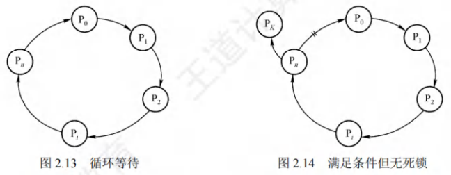
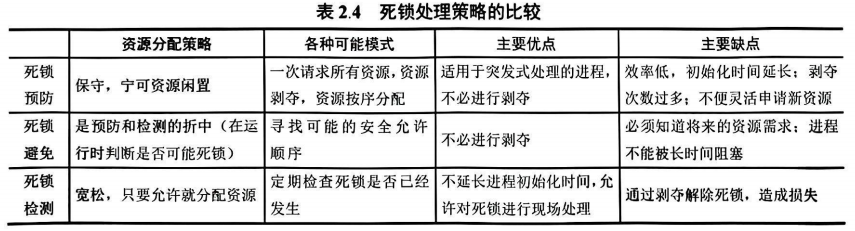
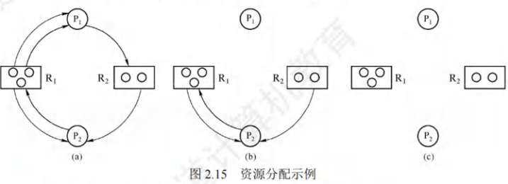

死锁
[toc]
死锁的概念
死锁，是指多个进程因竞争资源而造成的一种僵局（互相等待对方手里的资源），使得各个进程都被阻塞，若无外力干涉，这些进程都无法向前推进。
死锁与饥饿
饥饿，是指进程在信号量内无穷等待的情况，二者均为进程无法顺利推进的现象，但存在本质差异。
产生饥饿的主要原因
当系统中有多个进程同时申请某类资源时，若资源分配策略不公平（无法保证等待时间上界），即使系统未死锁，部分进程也可能因长期得不到资源而无法推进。当等待时间对进程执行产生明显影响时，即发生饥饿。
死锁和饥饿的主要差别
| 对比维度 | 死锁 | 饥饿 |
|---|---|---|
| 涉及进程数量 | 必然 ≥ 2 个（因循环等待资源） | 可仅 1 个（单个进程长期得不到资源） |
| 进程状态 | 所有死锁进程必定处于阻塞态 | 进程可能处于就绪态（如长期得不到CPU）或阻塞态 |
| 本质原因 | 进程间循环等待对方的资源 | 资源分配策略不公平，导致部分进程被“忽视” |
死锁产生的原因
- 系统资源竞争：系统中不可剥夺资源（如打印机、磁带机）的数量不足以满足多个进程的需求，进程因争夺这类资源陷入僵局。仅对不可剥夺资源的竞争可能产生死锁，对可剥夺资源（如CPU、主存）的竞争不会引发死锁。
- 进程推进顺序非法：进程请求和释放资源的顺序不当，例如“进程A先占资源1再请求资源2，进程B先占资源2再请求资源1”，易形成循环等待。
- 信号量使用不当：进程间彼此等待对方发送的消息（如信号量未正确同步），导致所有等待进程无法推进。
死锁产生的必要条件
产生死锁必须同时满足以下4个条件，任一条件不成立，死锁就不会发生：
- 互斥条件：进程要求对所分配的资源（如打印机）进行排他性使用，一段时间内某资源仅为一个进程占有；其他进程请求该资源时，只能等待。
- 不可剥夺条件：进程已获得的资源在未使用完之前，不能被其他进程强行夺走，只能由该进程主动释放。
- 请求并保持条件：进程已保持至少一个资源，又提出新的资源请求（该资源被其他进程占有），请求进程被阻塞时，仍保持自身已获得的资源。
- 循环等待条件：存在一种进程-资源的循环等待链，链中每个进程已获得的资源，恰好被链中下一个进程请求。
注意：死锁定义中的“循环等待”要求更严格（进程A等待的资源必须由进程B提供，进程B等待的资源必须由进程A提供），而“循环等待条件”无此限制，只需形成链式等待即可。

- 资源分配图含圈时，系统不一定死锁，核心原因是“同类资源数＞1”（例如2个进程争夺3个同类资源，即使形成等待链，也可通过分配剩余资源打破僵局）。
- 若系统中每类资源仅1个，则资源分配图含圈是系统死锁的充分必要条件。
死锁的处理策略
死锁处理的核心思路是“破坏条件防死锁”或“允许死锁后恢复”，具体分为三类策略：
- 死锁预防：设置限制条件，破坏死锁产生的4个必要条件中的一个或多个。
- 死锁避免：资源动态分配过程中，通过算法判断分配后系统是否进入“不安全状态”，仅在安全时允许分配。
- 死锁的检测及解除：不限制进程行为，允许死锁发生；通过系统检测机构及时发现死锁，再采取措施解除。
- 死锁预防 vs 死锁避免：二者均为“事先预防策略”。预防的限制条件严格，实现简单，但系统效率低、资源利用率低；避免的限制条件宽松，需通过算法判断安全状态，实现复杂，但系统性能更优。

死锁预防
死锁预防的核心是破坏死锁产生的4个必要条件之一，具体实现方式如下：
破坏互斥条件
将只能互斥使用的资源改造为允许共享使用，即可避免死锁。但多数临界资源（如打印机、数据库锁）的本质属性是“排他性”，无法改造为共享资源；且为保证系统安全，部分资源必须维持互斥性。因此，该方法可行性极低。
破坏不可剥夺条件
当已占有部分不可剥夺资源的进程，请求新资源失败时，必须主动释放已占有的所有资源，待后续需要时重新申请。此时进程已占资源被“剥夺”，破坏了不可剥夺条件。
- 特点：实现复杂，释放已占资源可能导致前一阶段工作失效；仅适用于“状态易于保存和恢复”的资源（如内存页、CPU寄存器）。
破坏请求并保持条件
核心思路是“进程请求资源时，不持有其他不可剥夺资源”，具体有两种实现方式：
- 预先静态分配：进程运行前，一次性申请完所需的全部资源；资源未满足前，进程不投入运行；运行期间不再请求新资源。
- 效果：破坏“请求”条件（运行中不请求资源）和“保持”条件（等待时不占有资源）。
- 缺点：资源严重浪费（部分资源仅在运行初期/末期使用，却长期被占用）；易导致饥饿（某进程因缺少一个资源，长期无法启动）。
- 逐步释放与申请：进程仅获得运行初期所需资源即可启动；运行中，先释放已使用完毕的资源，再申请新资源。
- 效果：避免资源长期闲置，改进了静态分配的缺点。
破坏循环等待条件
通过顺序资源分配法实现，核心是“按资源编号递增顺序请求资源”：
- 给系统中所有资源分类编号（如打印机为1、磁带机为2、扫描仪为3）；
- 规定进程必须按“编号递增”的顺序请求资源，且同类资源（同一编号）需一次申请完毕；
- 进程仅在已占有小编号资源时，才能申请更大编号的资源。
- 效果：已持有大编号资源的进程，无法逆向申请小编号资源，彻底打破“循环等待链”。
- 缺点：
- 资源编号需相对稳定，不便于新增资源类型；
- 进程实际使用资源的顺序可能与编号次序不一致，导致资源浪费；
- 限制了用户编程的灵活性（需按固定顺序申请资源）。
死锁避免
死锁避免不破坏死锁必要条件，而是在每次资源分配前判断安全性，仅允许“分配后系统仍安全”的请求，核心依赖“系统安全状态”和“银行家算法”。
系统安全状态
- 安全状态定义：系统能找到一个进程推进顺序（称为“安全序列”，如P₁→P₂→…→Pₙ），按此顺序为每个进程分配所需资源，直至满足所有进程的最大需求，使所有进程均可顺利完成。
- 一个系统可能存在多个安全序列。
- 不安全状态定义：系统无法找到任何一个安全序列。
- 安全与死锁的关系：
- 系统处于安全状态 → 一定不会死锁；
- 系统处于不安全状态 → 可能发生死锁（不安全≠必然死锁，但死锁时系统一定不安全）。
- 死锁避免的核心逻辑：每次资源分配后，检查系统是否仍为安全状态；若安全则允许分配，否则拒绝分配，让进程等待。
银行家算法
银行家算法是死锁避免的经典实现，其思想源于“银行放贷规则”（银行需保证放贷后仍有能力满足其他客户的贷款需求）：
- 前置条件：
- 进程运行前，声明对各类资源的“最大需求量”（不得超过系统资源总量）；
- 系统记录三个关键数据：
- 可用资源向量（Available）：每类资源当前的空闲数量；
- 最大需求矩阵（Max）：每个进程对每类资源的最大需求量；
- 分配矩阵（Allocation）：每个进程已获得的每类资源数量；
- 需求矩阵（Need）：每个进程仍需的每类资源数量（Need = Max - Allocation）。
- 分配检查步骤：
当进程Pᵢ请求某类资源Requestᵢ时，系统按以下步骤判断：- 检查Requestᵢ ≤ Needᵢ（请求量不超过进程最大需求），若不满足则拒绝；
- 检查Requestᵢ ≤ Available（请求量不超过当前空闲资源），若不满足则进程等待；
- 假设分配Requestᵢ给Pᵢ，更新数据（Available’ = Available - Requestᵢ；Allocation’ᵢ = Allocationᵢ + Requestᵢ；Need’ᵢ = Needᵢ - Requestᵢ）；
- 检查更新后的系统是否存在安全序列：若存在，则允许分配；否则撤销假设，让Pᵢ等待。
死锁检测
死锁检测不限制进程行为，允许死锁发生，核心是通过“资源分配图简化”判断系统是否死锁，与死锁避免的关键差异如下：
| 对比维度 | 死锁避免 | 死锁检测 |
|---|---|---|
| 资源请求信息 | 需要知道进程整个生命周期的最大资源需求 | 仅需知道当前时刻的资源请求情况 |
| 核心目标 | 防止系统进入不安全状态，避免死锁发生 | 检测当前时刻是否已发生死锁 |
资源分配图与简化
死锁检测通过“资源分配图”描述进程与资源的关系，再通过“图简化”判断是否死锁：
- 资源分配图的组成：
- 圆圈：代表进程（如P₁、P₂）；
- 方框：代表资源类（如R₁、R₂），方框内的小圆代表该类资源的个数；
- 有向边：
- 请求边：从进程指向资源（如P₁→R₁，表示P₁申请1个R₁资源）；
- 分配边：从资源指向进程（如R₁→P₁，表示1个R₁资源已分配给P₁）。

-
资源分配图简化步骤：
简化的核心是“消去可完成进程的所有边”，具体如下：- 找出“既不阻塞又不孤立”的进程Pᵢ：即Pᵢ的所有请求边对应的资源数，均≤该资源类的空闲数量（资源空闲数量=资源总量-分配边数量）；
- 这类进程可顺利完成，释放其已占有的所有资源，因此消去Pᵢ的所有请求边和分配边，使其成为孤立节点；
- Pᵢ释放的资源会增加系统空闲资源，可能唤醒其他阻塞进程，重复步骤1-2，直至无法再消去任何边。
-
死锁定理：系统状态S为死锁状态，当且仅当S状态的资源分配图“不可完全简化”（即简化后仍存在边和进程节点）。
死锁解除
一旦检测出死锁，需立即采取措施解除，核心思路是“剥夺资源”或“终止/回退进程”，具体方法如下：
-
资源剥夺法：
- 操作：挂起部分死锁进程，抢占其已占有的资源，将这些资源分配给其他死锁进程，直至打破循环等待。
- 注意：需避免被挂起的进程长期得不到资源，导致新的饥饿。
-
撤销进程法：
- 操作：强制撤销部分或全部死锁进程，剥夺其资源，分配给剩余死锁进程。
- 撤销原则：优先撤销“优先级低”“撤销代价小”的进程（如刚启动的进程比接近完成的进程代价小）。
- 缺点：部分进程可能已接近完成，撤销后需重新执行，代价较大。
-
进程回退法：
- 操作：让一个或多个死锁进程回退到“足以回避死锁”的还原点（如回退到未申请某资源之前的状态），进程回退时自愿释放资源。
- 要求：系统需保存进程的历史运行信息，提前设置还原点，实现复杂度较高。